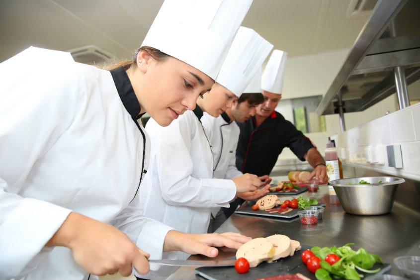
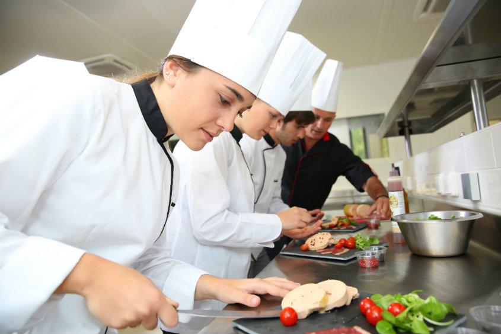

Ninguém tem a segunda possibilidade de causar a primeira impressão.
O ambiente perfeito para você e sua familia.
Seja bem-vindo ao Utopia Gastrobar, se você estava procurando um lugar com um ambiente legal, com pessoas agradáveis e um cardápio de dar água na boca, aqui no Utopia Bar você encontrará tudo isso e muito mais!

 
